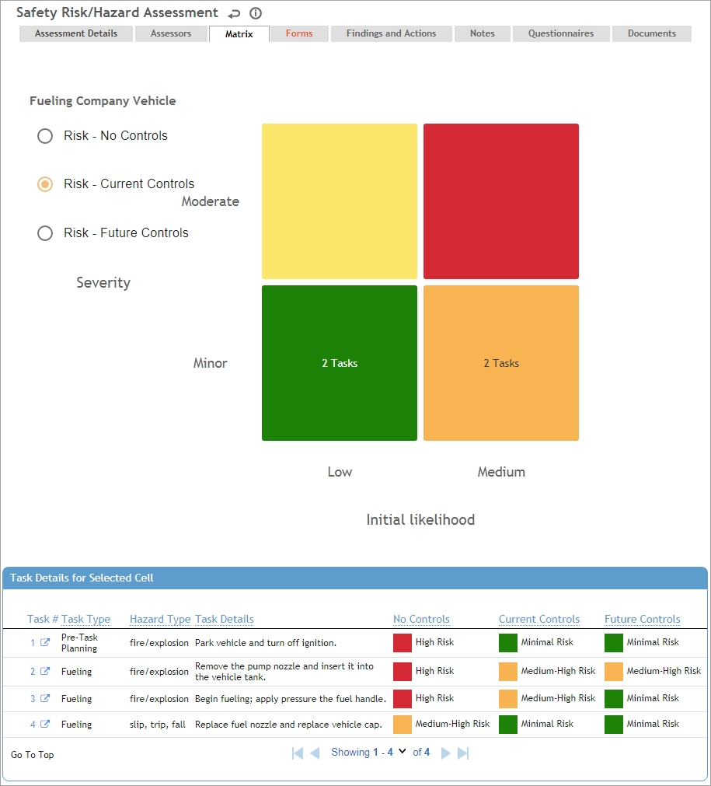

The Matrix tab in each risk assessment record displays the risks in a matrix.
The Matrix includes toggles to view the risks with No Controls, Current Controls, or Future Controls. If the "Enable Risk Factor Qualifier For Risk Factor Picklist in <Module> Risk Assessment Entry" system setting is enabled, an Assessment Category drop-down field is also displayed that lists all active Assessment Categories flagged for the respective Risk Assessment module (in the AssessmentCategory look-up table). When an assessment category is selected, only risk entries with that assessment category will display on the matrix.
A table below the matrix lists the tasks, using the color defined for the risk in the RiskDefinition look-up table. When you first select the controls toggle, the table lists all tasks; when you click on a cell in the matrix, the table only shows the tasks for that cell. Click a Task # in the table to open the task details; Cority also provides functionality to display risk factor information by clicking directly in the matrix. Related fields must be added to custom form layouts. Please contact your system administrator for further information.

The risk factors for the matrix axes (e.g. Severity, Probability) and which axes they appear on are set in the Risk Settings (see Working with Risk Settings). The risk factor values (e.g. low, medium, high) are defined in the HazardSeverityRating, Probability, and RiskDefinition look-up tables. The RiskMatrix look-up table defines the structure and color of the matrix.
If the RiskMatrix table is not populated, or if the Risk Settings are set to use a formula for risk calculations instead of the matrix, you will not be able to see the matrix. Contact your administrator for assistance.
If a numerical value is desired for a task on a matrix-configured assessment, simply type the numerical value in the Value (for Matrix Risk Setting) field in the RiskMatrix table.